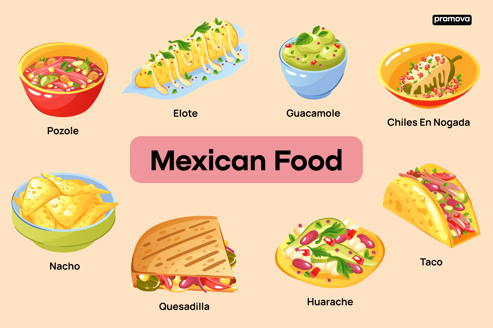
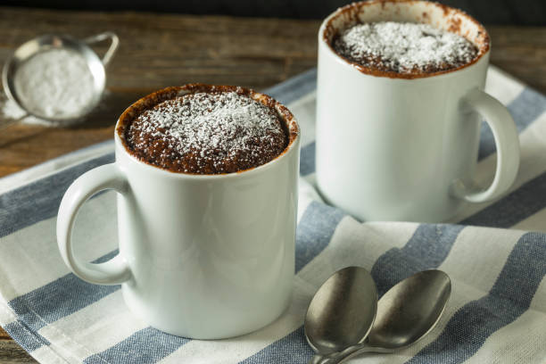

Dishes, I recently cooked!
Recently, I was obsessed with cooking mexican food. It is known for its vibran flavors, rich spieces, and diverse ingrediens. Something very important in the mexican kitchen are the dips. The most popular dip is probably Guacamole.
The best snack ever!
My absolute favorite snack of all time is mugcake. This takes about 10 min and is super tasteful. The differets between a mugcake and a cake is ofcours that the doe is in the mug. But you don't put the doe with the mug in the ofen but in the microwave. This causes the mugcake to have a chewy texture but it is still a delicacy.
About Me

Since I went to middle school, I sometimes was required to take some food with me to school because I didn't had time to go home. Because I didn't want to eat noodels with sauce all the time I was forced to find some easy but tasteful dishes to take with me. With the time I got more and more into cooking and now I would even consider it as my hobby.
Poem about food!
"In the kitchen, pots and pans, cooking up a feast, oh so grand. From crispy fries to juicy steak, food that makes our taste buds wake. Food connects us, brings us cheer, gather 'round, let's all share and cheer. With every meal, a memory made, food, a joy that will never fade."
- Snapchat AI